A kitchen's paint color does more heavy lifting than almost any other single design decision in the room. It sets the tone before the cabinets, countertops, or hardware ever get a say, and the right shade can make a kitchen feel considerably more expensive than it actually was to put together.
Timeless doesn't mean boring, either. The twenty colors below span from the safest whites and creams to bolder, more distinctive choices, all picked for how well they hold up over the long term rather than how they'll look in a single season's trend cycle.

20 Timeless Kitchen Paint Colors
1. Powder Blue
Powder blue gives a kitchen a soft, charming feel without ever tipping into overly sweet territory.
It suits a breakfast nook or a kitchen that leans into a slower, more relaxed morning routine particularly well.
It's cheerful without being loud, the kind of color that makes an ordinary weekend morning feel a little more special.
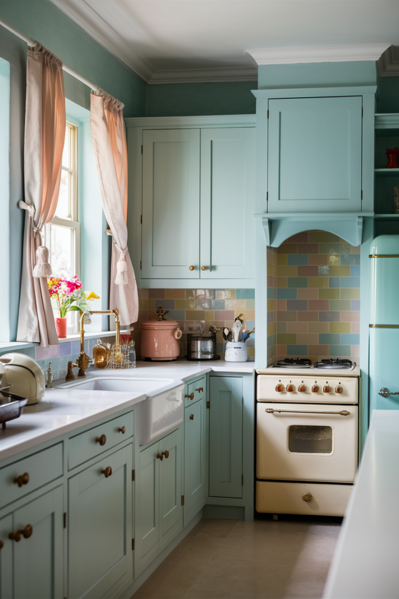
2. Cool Silver Gray
For something more futuristic-leaning, a cool gray with silver undertones brings a crisp, clean energy to a kitchen.
It suits a modern kitchen especially well, pairing naturally with stainless steel appliances and sleek cabinetry.
It reads as easy and put-together without requiring much else in the room to work around it.
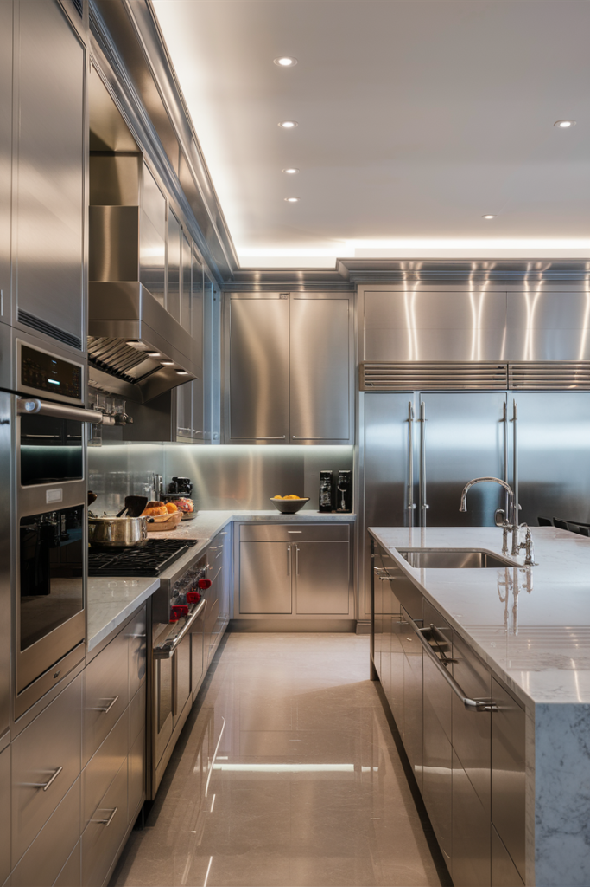
3. Soft Mocha Brown
Soft mocha brown carries the warmth of coffee with milk, bringing real richness into a kitchen without feeling heavy.
It pairs beautifully with cream cabinetry, brass hardware, and warm wood flooring.
For a kitchen that should feel like a genuine hug the moment someone walks in, mocha brown is a strong starting point.
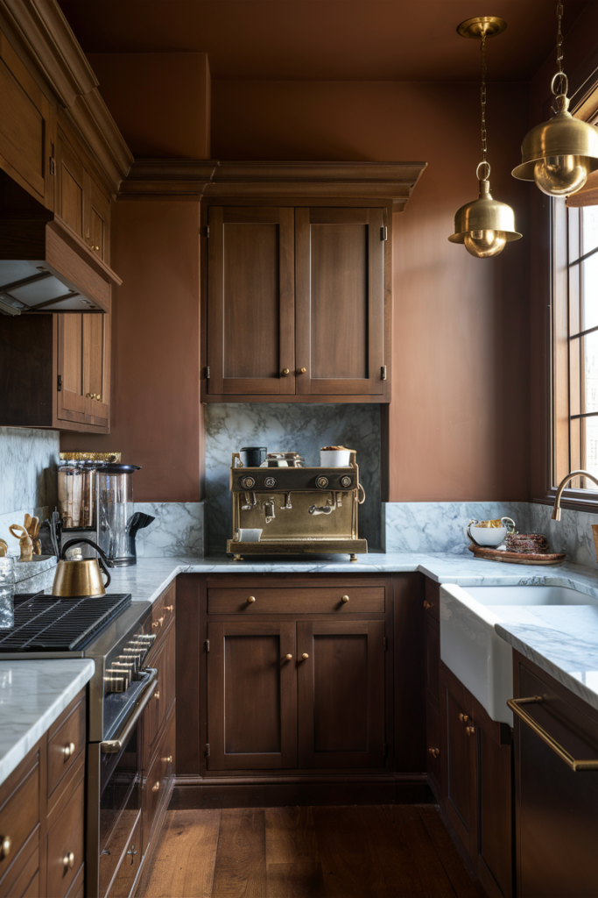
4. Pale Blush Pink
Pale blush pink doesn't have to read as overly sweet or themed, done well, it's warm, neutral, and genuinely sophisticated.
Used sparingly as an accent or applied throughout the whole kitchen, it tends to prompt people to ask exactly what shade it is.
It pairs especially well with brass fixtures and warm white trim, keeping the look elegant rather than overly playful.
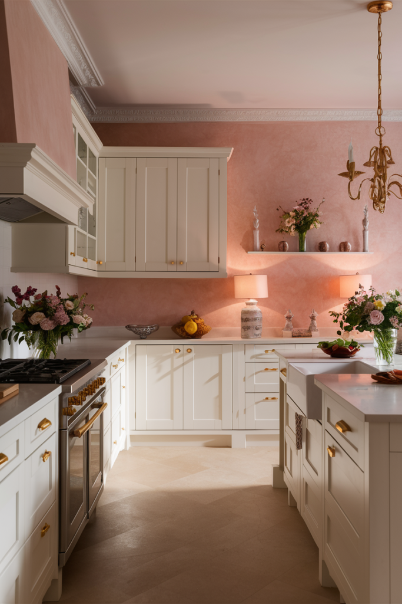
5. Olive Green
Olive green reads as sage's moodier, more grounded cousin, carrying a richer and slightly more mysterious quality.
It gives a kitchen an organic, earthy feel that pairs particularly well with warm wood and brass.
It's timeless and distinctive enough to draw genuine comments, without tipping into anything too trend-driven.
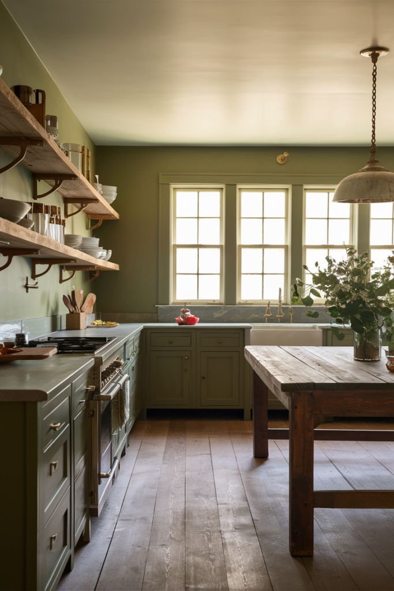
6. Sky Blue
For a kitchen that should feel fresh and light without going fully white, sky blue delivers that airy quality on its own.
It has a way of making a smaller kitchen feel noticeably more open, almost like a wall was removed rather than simply repainted.
It suits a kitchen that gets a lot of natural daylight especially well, amplifying the brightness already in the room.
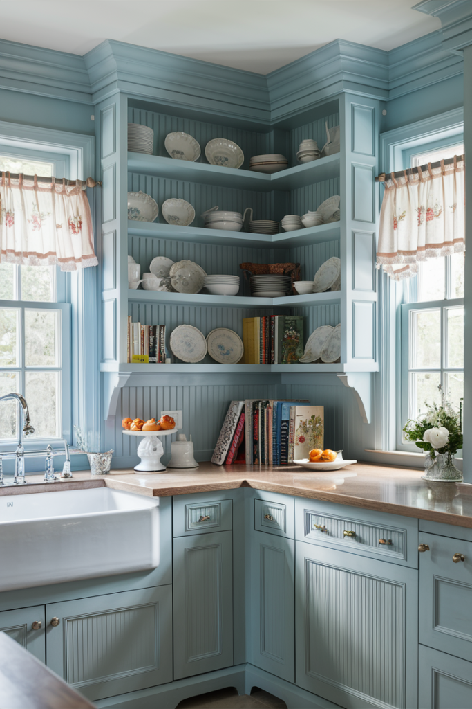
7. Black With Warm Undertones
Black genuinely works in a kitchen, as long as it carries warm undertones rather than a flat, cold black.
A soft black, closer to charcoal or inky espresso, brings real sophistication without feeling harsh.
It suits cabinets, a single accent wall, or an entire kitchen for anyone feeling bold, paired with brass hardware, it reads as genuinely elevated.
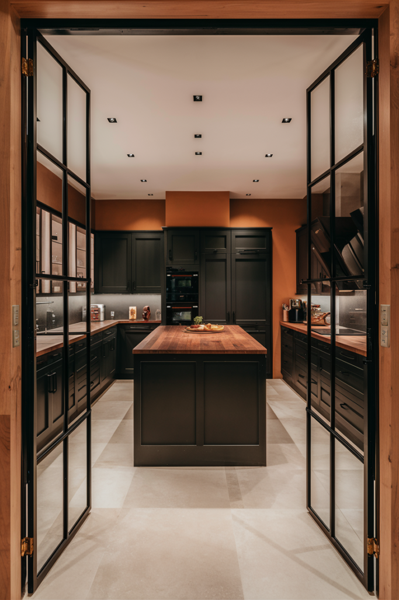
8. Muted Mustard Yellow
A muted mustard yellow brings genuine brightness to a kitchen while still carrying a touch of vintage sophistication.
It works especially well in a retro-leaning kitchen, paired with black hardware or checkerboard flooring.
It's a riskier choice than most of the neutrals on this list, but when it lands, it tends to become the room's defining feature.
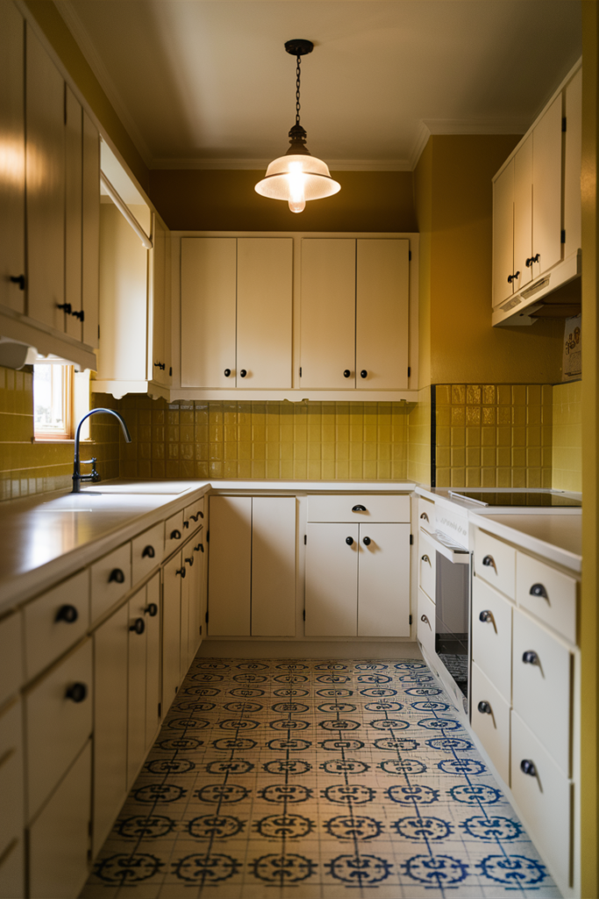
9. Deep Forest Green
For anyone ready to make a genuine statement while staying grounded in nature-inspired tones, deep forest green delivers both at once.
It brings a moody, boutique-cabin feel to a kitchen, especially when paired with brass fixtures and natural wood.
It's a bolder pick than most on this list, but one that tends to age exceptionally well rather than feeling trend-driven.
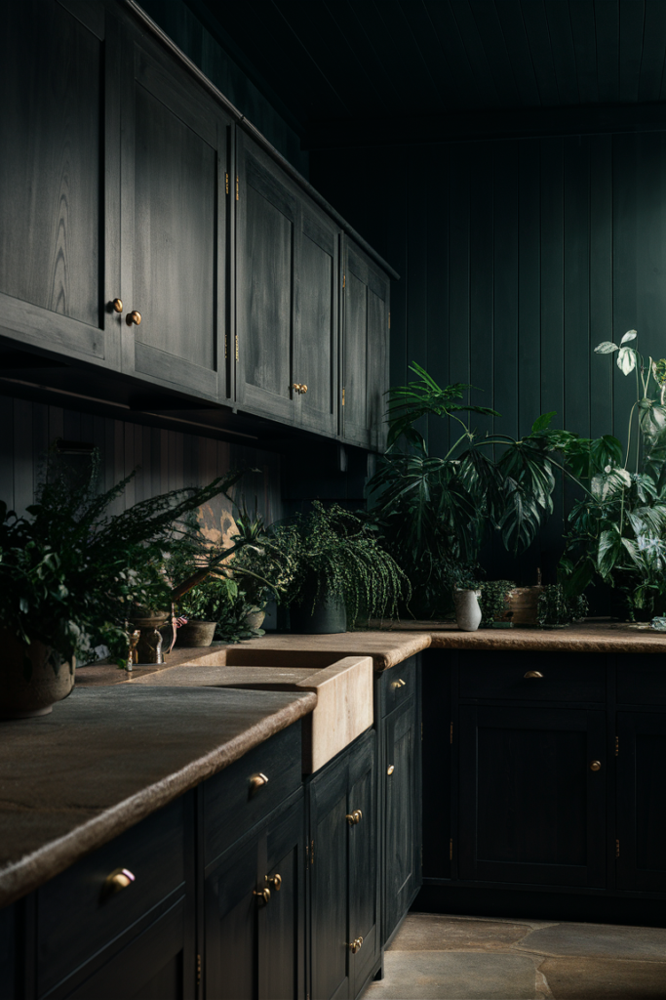
10. Soft Taupe
Soft taupe tends to go unnoticed at first glance, which is exactly its strength, it's subtle, grounding, and quietly sophisticated.
It suits a kitchen going for a quiet-luxury feel especially well, working as a backdrop rather than a focal point.
It pairs effortlessly with both warm and cool materials, which makes it one of the more flexible neutral choices on this list.
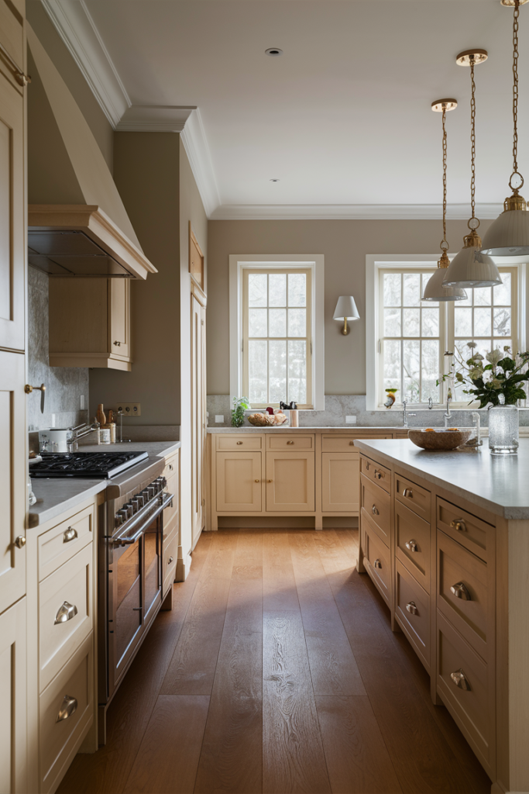
11. Earthy Terracotta
For a kitchen that feels warm, welcoming, and a little rustic, terracotta delivers that Mediterranean quality without requiring an actual trip abroad.
It pairs beautifully with natural wood, woven textures, and warm metals, reinforcing the relaxed, sun-baked feeling the color naturally carries.
It's a strong choice for anyone who wants a kitchen that feels inviting rather than sleek.
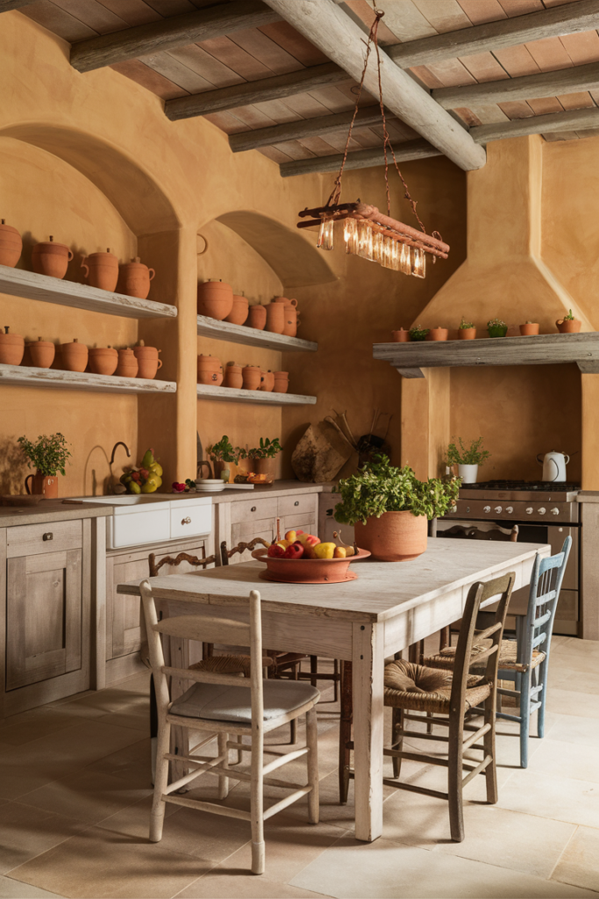
12. Navy Blue
Navy blue sounds intense at first mention, but it's held up as a genuinely timeless kitchen color.
It works especially well against brass hardware, marble counters, or classic white trim, turning what could feel heavy into something polished instead.
For anyone hesitant to commit to navy across the whole room, using it on lower cabinets or a single accent wall offers a lower-risk way to try it.
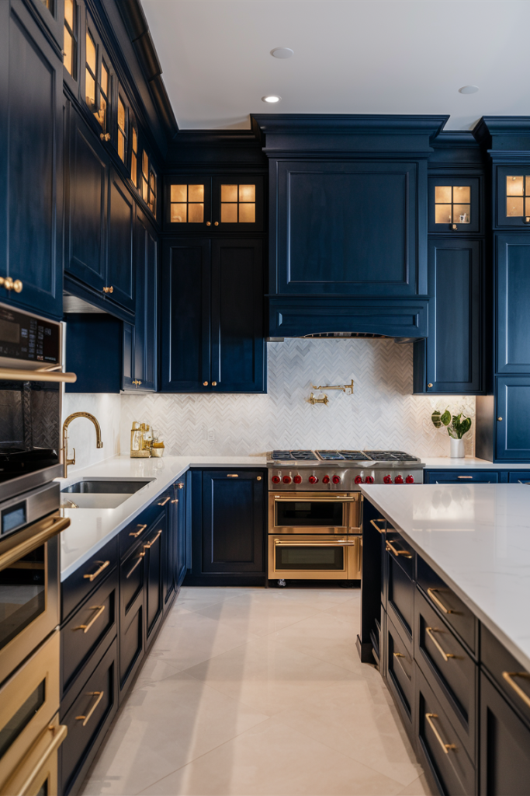
13. Charcoal Gray
Charcoal gray brings real edge to a kitchen while still staying genuinely livable day to day.
It reads as the more grown-up alternative to a fully black kitchen, offering drama without the same level of commitment.
Paired with brass or warm wood accents, charcoal gray keeps a kitchen feeling bold rather than stark.
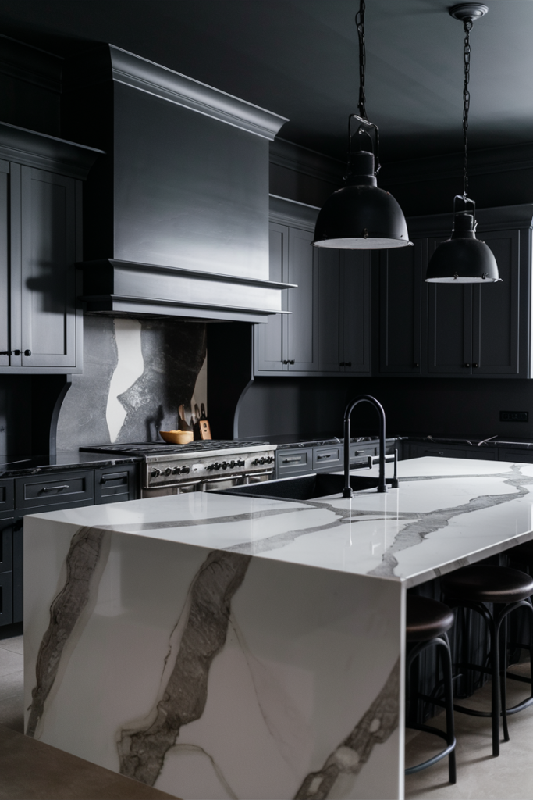
14. Dusty Blue
Dusty blue threads the needle between too bold and too bland, bringing in a gentle dose of color while still staying relaxed.
It works particularly well in a coastal-leaning kitchen, paired with natural wood and white countertops.
For anyone who wants a hint of color without fully committing to a statement shade, dusty blue is usually exactly what they're after.
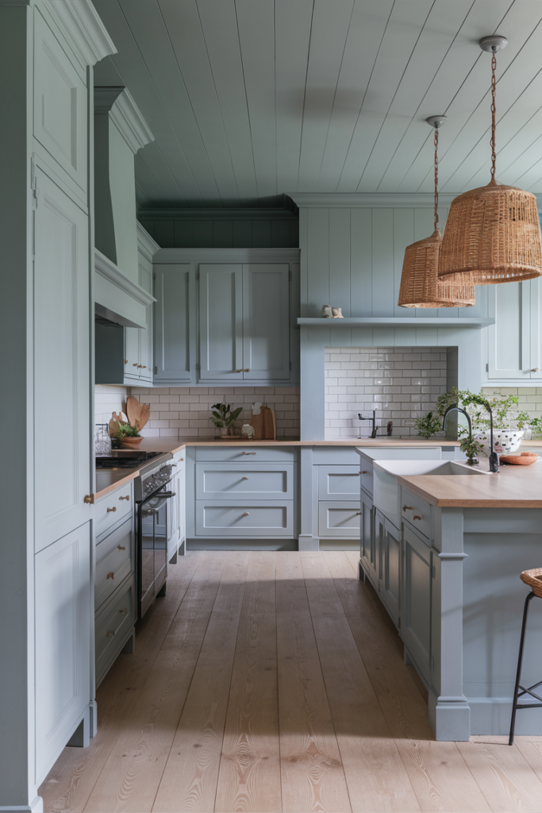
15. Sage Green
Sage green brings a genuinely calming quality to a kitchen without ever feeling overly trendy.
It reads as muted and natural rather than bold, which makes it easy to live with over the long term.
Paired with warm wood tones or brass fixtures, sage green settles into a kitchen in a way that feels considered rather than seasonal.
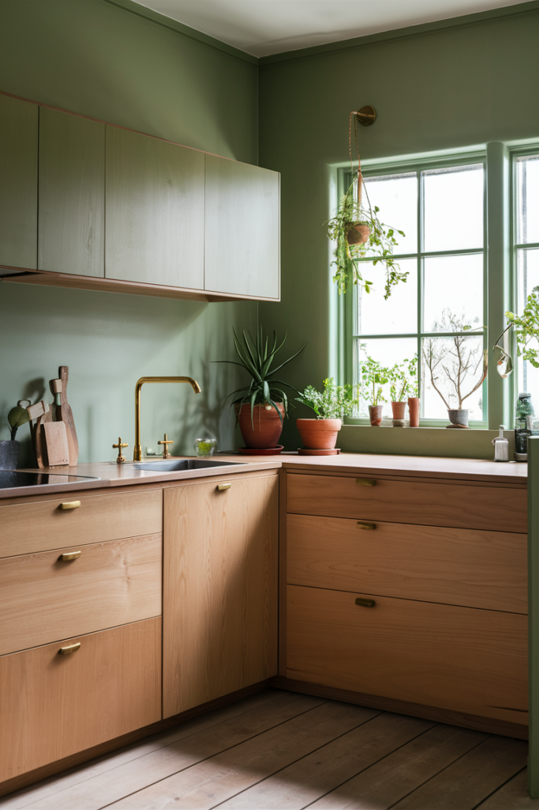
16. Greige
Greige splits the difference between beige and gray, landing on a combination that works with nearly any other material in the room.
It carries the warmth of beige alongside the cooler sophistication of gray, which makes it one of the more universally flattering neutral choices available.
For a kitchen that needs to feel both modern and lived-in at the same time, greige is usually the move.
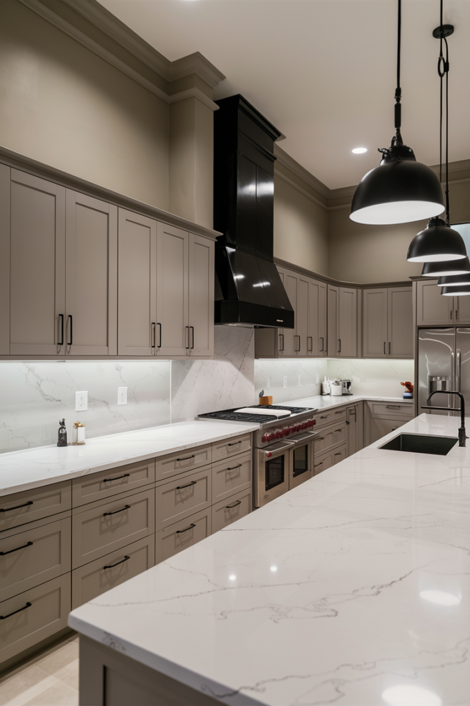
17. Warm Beige
Beige gets dismissed more often than it deserves, and a warm version is genuinely having a moment again.
It reads as earthy without turning muddy, and soft without becoming boring, which makes it an easy neutral to build a whole kitchen around.
It pairs especially well with oak cabinetry, granite countertops, or exposed brick for anyone lucky enough to have it.
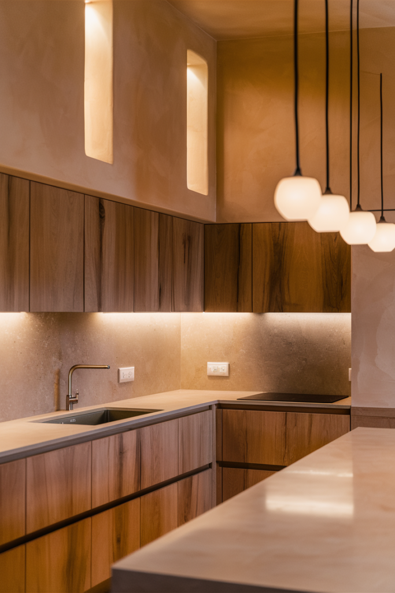
18. Classic Cream
For a neutral that leans cozy rather than cold, cream is a reliable choice.
It works equally well in a modern kitchen or a more traditional one, and it pairs particularly nicely with butcher block counters, brass hardware, or a farmhouse sink.
It's also a big part of why French country kitchens read as so welcoming, cream walls do a lot of that quiet work.
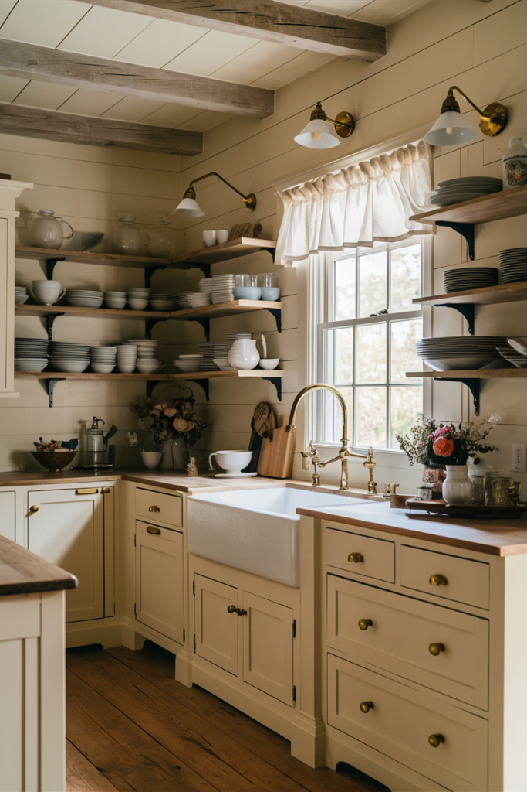
19. Soft White
A warm soft white is close to impossible to get wrong in a kitchen.
It's versatile enough to suit almost any cabinet style or countertop material, and it reads as classic rather than trendy, which keeps it from feeling dated even years later.
Painting over a dark, dramatic color with soft white tends to brighten an entire room far more dramatically than expected.
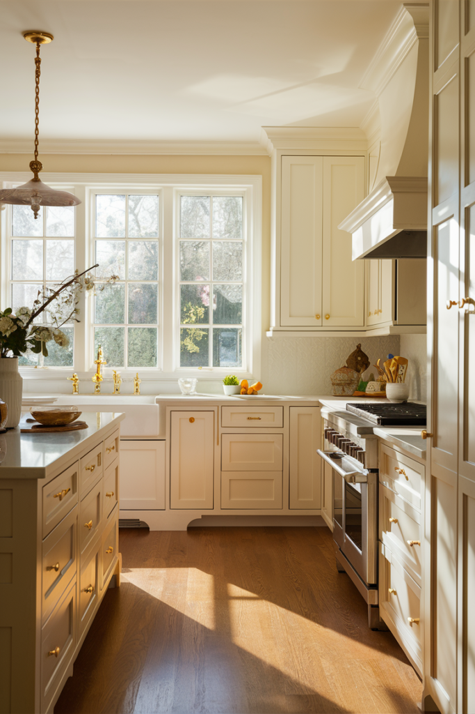
20. Eggshell White
Eggshell white sits softer than a bright white and warmer than cream, which makes it one of the more forgiving neutral choices for a kitchen.
It also tends to hide everyday marks and smudges a little better than a stark white would, which matters in a room that gets this much daily use.
For anyone torn between several shades, eggshell white is usually the safest place to land, it rarely looks like a compromise.
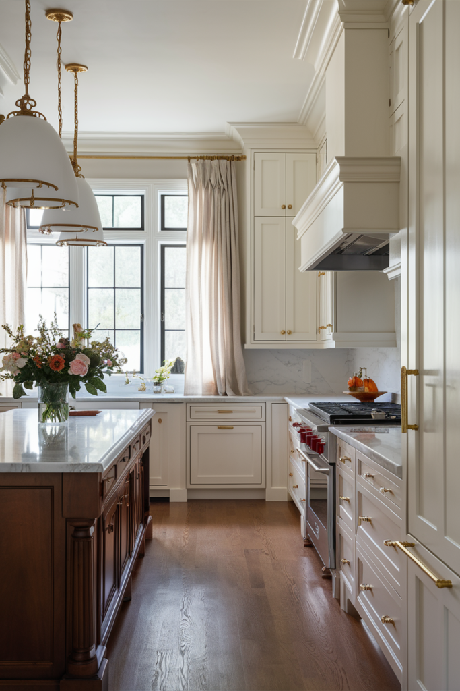
Final Thoughts
None of these twenty colors require a full kitchen renovation to try. A single coat of paint is one of the lowest-cost, highest-impact changes a kitchen can get, and it's also one of the easiest to undo if the final result doesn't land the way it looked on the swatch.
The strongest choice is usually the one that actually matches how the kitchen gets used and lit throughout the day, not necessarily the most dramatic option on the list.